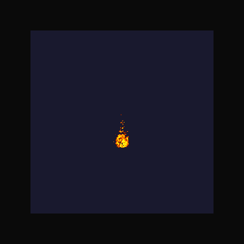

3D Volumetric Flame Rendering

Screen-space Heat Refraction
This is a 1-page summary. For detailed technical implementation and comprehensive results, please see the full report.
We have successfully implemented a real-time 3D fire simulation system using GPU-accelerated fluid dynamics. Our implementation features physically-based Navier-Stokes fluid simulation, volumetric rendering with blackbody radiation, and screen-space heat refraction effects. The system achieves 30+ FPS at high quality settings with a 96³ simulation grid on consumer GPUs.
3D Volumetric Flame Rendering
Screen-space Heat Refraction
We are on track with our proposed timeline. All baseline features from Week 1 have been successfully implemented: